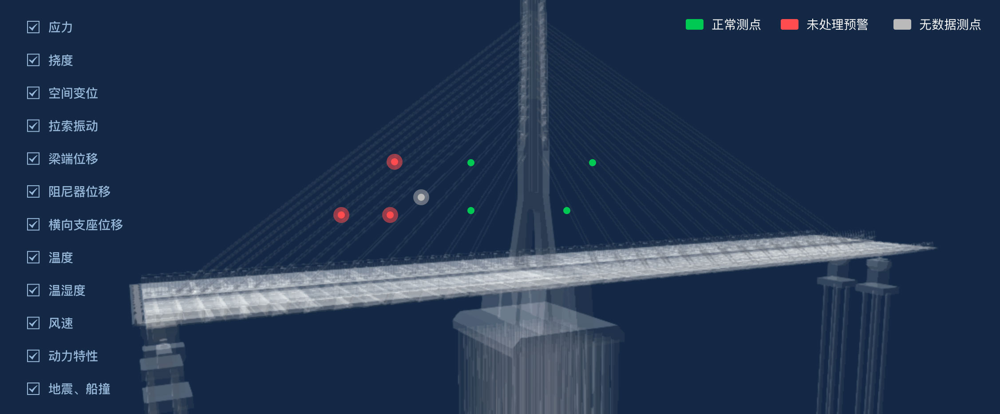

浦仪公路西段上坝夹江大桥健康监测系统
2020年05月11日 周一 19 : 46
管理员
首页
时程数据
测点时程
交通荷载
统计数据
测点时程统计
交通荷载统计
结构
状态分析
结构动力特性分析
应力五度指标
结构变形响应分析
正交异性板疲劳分析
拉索索力时频域分析
结构相关性分析
阻尼器/梁端纵向累积行程分析
行人舒适度评价
服役
环境分析
实际车载效应分析
风荷载分析
温度场分析
预警管理
结构状态预警
服役环境预警
系统管理
角色管理
监测设备管理
资料备份
IBM模型

加速度基频值时程图
实时
小时
日
YL-A1-B-01
YL-A1-B-02
YL-A1-B-03
YL-A1-B-04
加速度频谱图
YL-A1-B-01
YL-A1-B-02
YL-A1-B-03
YL-A1-B-04